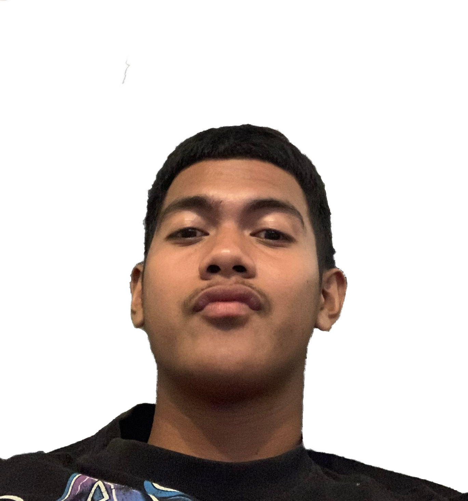

About Me.
Hey there, I'm an techy hailing from the beautiful Philippines. With a passion for all things tech, I'm not just your average teenager—I'm a force of curiosity and efficiency. Whether it's diving into the latest gadgets, tinkering with code, or mastering new software, I play, discover, and conquer the tech realm. Eager to learn and hungry for success, I'm on a mission to turn my goals into reality. Ready to bring a touch of Pinoy magic to the tech world, one discovery at a time! Let's create some digital wonders together! #EagerLearner